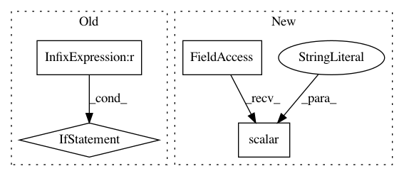

963710e3d38c9ad1d8b8cc1419a3bd1b3dddde1f,opennmt/utils/optim.py,,optimize,#Any#Any#Any#,90
Before Change
learning_rate = float(params["learning_rate"])
clip_gradients = params.get("clip_gradients")
if clip_gradients is not None:
clip_gradients = float(clip_gradients)
optimizer_class = get_optimizer_class(params["optimizer"])
optimizer_params = params.get("optimizer_params", {})
if optimizer_class.__name__ == "AdafactorOptimizer":
After Change
start_decay_steps=params.get("start_decay_steps", 0),
minimum_learning_rate=params.get("minimum_learning_rate", 0))
learning_rate = decay_fn(learning_rate, global_step)
tf.summary.scalar("learning_rate", learning_rate)
// Optimizer.
optimizer_class = get_optimizer_class(params["optimizer"])
optimizer_params = params.get("optimizer_params", {})
In pattern: SUPERPATTERN
Frequency: 3
Non-data size: 4
Instances
Project Name: OpenNMT/OpenNMT-tf
Commit Name: 963710e3d38c9ad1d8b8cc1419a3bd1b3dddde1f
Time: 2018-11-09
Author: guillaumekln@users.noreply.github.com
File Name: opennmt/utils/optim.py
Class Name:
Method Name: optimize
Project Name: arnomoonens/yarll
Commit Name: 86ce5d52134a56806112ff8664e4034338e0e05a
Time: 2019-03-21
Author: arno.moonens@gmail.com
File Name: yarll/agents/ppo/ppo.py
Class Name: PPO
Method Name: learn
Project Name: arnomoonens/yarll
Commit Name: 34758fa83c25c4b79425bbfa6e56e23618253f37
Time: 2019-03-15
Author: arno.moonens@gmail.com
File Name: yarll/agents/env_runner.py
Class Name: EnvRunner
Method Name: get_steps